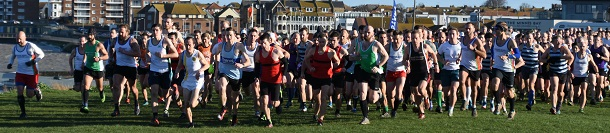

With one match still to go, Sevenoaks AC's women's team made sure of victory in the Kent Fitness Cross Country League with a fine second place at the penultimate fixture at Minnis Bay on 12th January.
SAC assembled a huge team of 33 runners for the farthest-flung race of the 2019/20 series: a brilliant turnout. So that despite a big effort by Canterbury Harriers - including a win for their women - SAC lost no ground in the team standings. With the SAC women second and the men third on the day, the combined team was second. After five of the six races, SAC women's team lies first, the men's team (which does not have championship status) fourth, and the combined team second. The Sevenoaks AC women can't be caught and will win the series and the SAC combined team will finish second regardless of outcome of the final match on February 9th.
Cath Linney was SAC's leading woman in seventh place, with fellow scorers Vanessa Gilmartin, Suzy Claridge and Heather Fitzmaurice, while the men were led home by James Mason in second place overall, with Guillaume Ninevan, Ed Saunders, Andrew Milne, Mike Lochead, Andrew Hutchinson, Andrew Mead and Darius Sarshar also scoring. However the whole team were stars as they all ran well to add to other teams' scores.
Individual medals also look possible with many SAC runners doing well in the standings, including Vanessa Gilmartin (2nd W40), Suzy Claridge (5th W45), Cath Linney (2nd W50), Pauline Dalton (1st W55), Bridgit Weekes (2nd W60), Sylvia Lewis (2nd W65), James Mason (2nd man & 1st M35), Andrew Milne (3rd M35), Andrew Mead (4th M50) and Jeremy Winter (1st M65).
The SAC results at Minnis were:
| Ov Pos | Lg Pos | Runner | Age | Time | Club | Rating | # Races |
|---|---|---|---|---|---|---|---|
| 2 | 2 | James Mason | 36 | 36:58 | Sevenoaks AC | 99.67 | 13 |
| 12 | 12 | Guillaume Nineven | 34 | 38:23 | Sevenoaks AC | 96.33 | 9 |
| 20 | 20 | Edmund Saunders | 37 | 39:20 | Sevenoaks AC | 93.67 | 12 |
| 33 | 33 | Andrew Milne | 37 | 40:12 | Sevenoaks AC | 89.33 | 27 |
| 35 | 35 | Mike Lochead | 34 | 40:14 | Sevenoaks AC | 88.67 | 11 |
| 41 | 39 | Andrew Hutchinson | 40 | 40:37 | Sevenoaks AC | 87.33 | 11 |
| 48 | 45 | Andrew Mead | 51 | 41:29 | Sevenoaks AC | 85.33 | 38 |
| 50 | 47 | Darius Sarshar | 50 | 41:35 | Sevenoaks AC | 84.67 | 9 |
| 59 | 56 | Jimmy George | 38 | 42:01 | Sevenoaks AC | 81.67 | 12 |
| 66 | 63 | Richard Alford-Smith | 43 | 42:36 | Sevenoaks AC | 79.33 | 4 |
| 80 | 75 | Jim Harness | 52 | 43:11 | Sevenoaks AC | 75.33 | 13 |
| 86 | 80 | Daniel Witt | 44 | 43:31 | Sevenoaks AC | 73.67 | 57 |
| 92 | 85 | Zack Ramsden | 53 | 44:18 | Sevenoaks AC | 72.00 | 5 |
| 95 | 88 | Jatinder Soomal | 37 | 44:23 | Sevenoaks AC | 71.00 | 12 |
| 108 | 7 | Catherine Linney | 50 | 45:16 | Sevenoaks AC | 95.92 | 34 |
| 129 | 116 | Graham Dwyer | 47 | 46:13 | Sevenoaks AC | 61.67 | 12 |
| 134 | 120 | Jeremy Winter | 66 | 46:21 | Sevenoaks AC | 60.33 | 4 |
| 143 | 15 | Vanessa Gilmartin | 44 | 46:46 | Sevenoaks AC | 90.48 | 16 |
| 145 | 127 | James Nash | 28 | 46:50 | Sevenoaks AC | 58.00 | 5 |
| 151 | 132 | James Graham | 66 | 47:13 | Sevenoaks AC | 56.33 | 23 |
| 162 | 24 | Suzy Claridge | 47 | 47:38 | Sevenoaks AC | 84.35 | 5 |
| 170 | 143 | Sean Leith | 48 | 47:54 | Sevenoaks AC | 52.67 | 2 |
| 177 | 26 | Heather Fitzmaurice | 50 | 48:00 | Sevenoaks AC | 82.99 | 78 |
| 193 | 32 | Pauline Dalton | 55 | 48:51 | Sevenoaks AC | 78.91 | 49 |
| 223 | 181 | Duncan Cochrane | 62 | 50:03 | Sevenoaks AC | 40.00 | 34 |
| 235 | 191 | Leonard Lai King | 40 | 50:32 | Sevenoaks AC | 36.67 | 2 |
| 237 | 43 | Bridgit Weekes | 61 | 50:36 | Sevenoaks AC | 71.43 | 10 |
| 238 | 193 | Tony Horlock | 59 | 50:37 | Sevenoaks AC | 36.00 | 11 |
| 291 | 59 | Sarah Shewell | 60 | 53:35 | Sevenoaks AC | 60.54 | 112 |
| 311 | 242 | Hugh Shewell | 30 | 54:59 | Sevenoaks AC | 19.67 | 25 |
| 408 | 120 | Bet Benn | 38 | 1:05:39 | Sevenoaks AC | 19.05 | 3 |
| 428 | 133 | Sylvia Lewis | 67 | 1:09:23 | Sevenoaks AC | 10.20 | 18 |
| 434 | 294 | James Fitzmaurice | 77 | 1:12:02 | Sevenoaks AC | 2.33 | 73 |
The full results are here.

The final event is at Blean Woods, Rough Common on Sunday 9th February at 11:00. is the SAC team organiser.